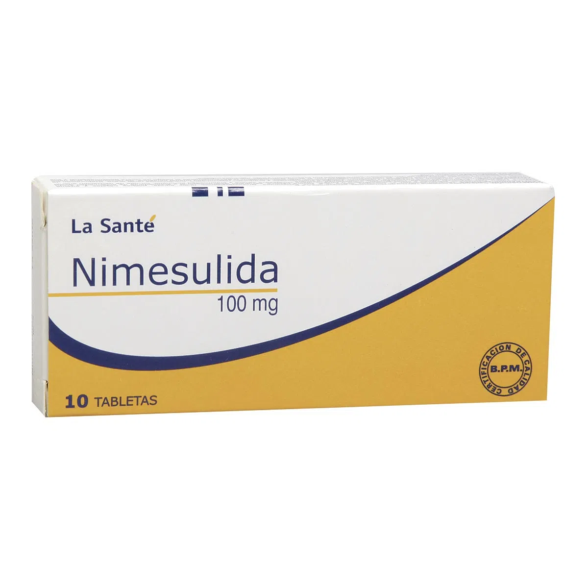
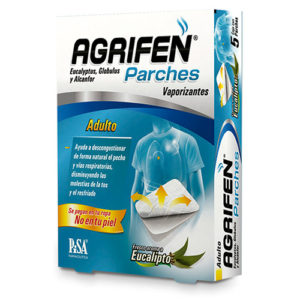
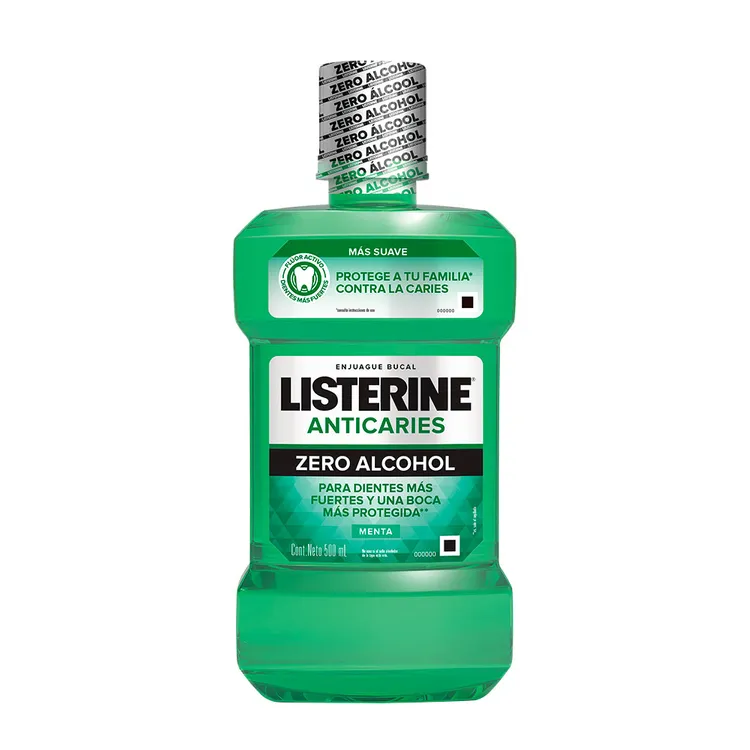
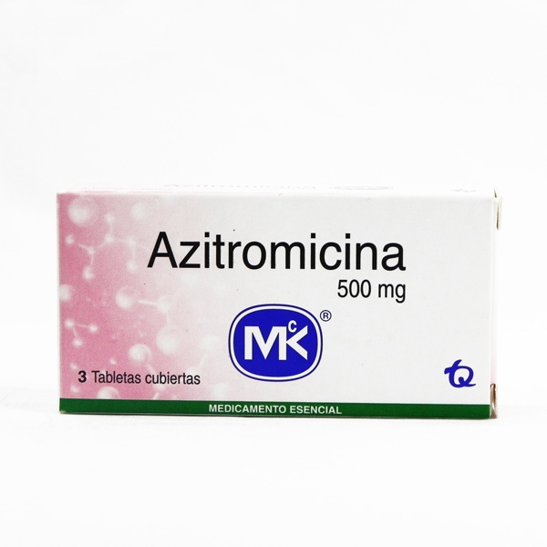
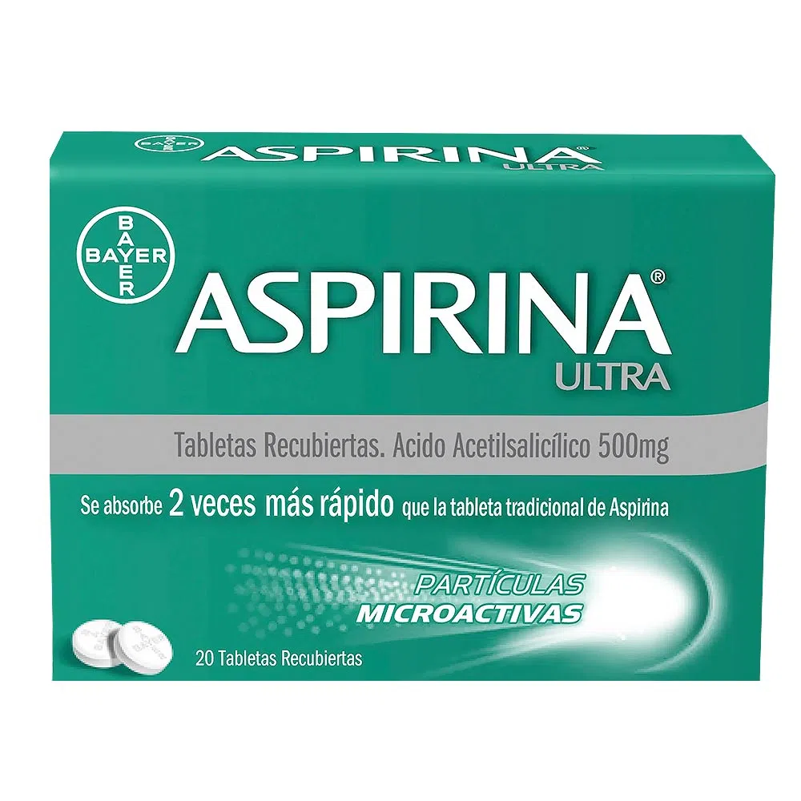
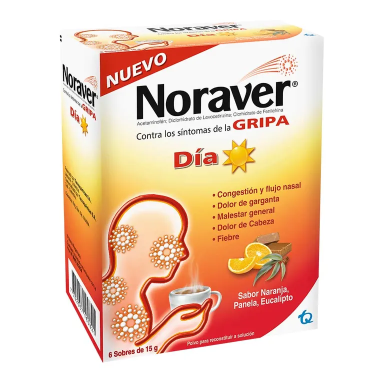
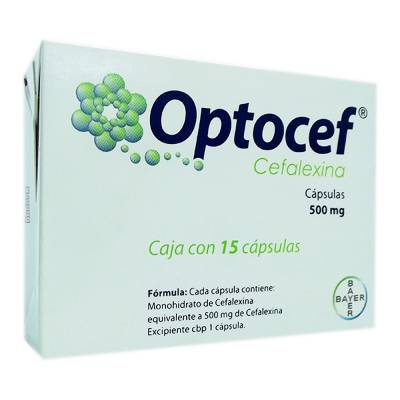
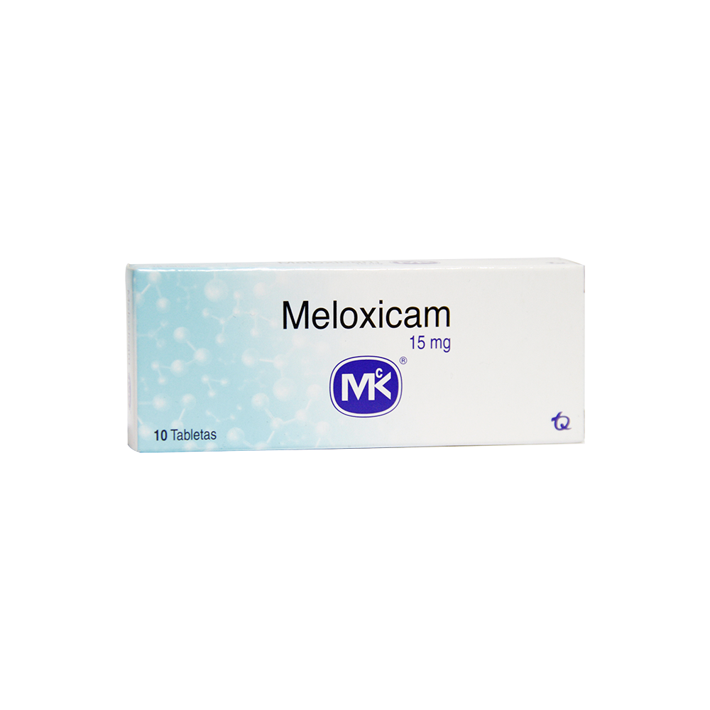
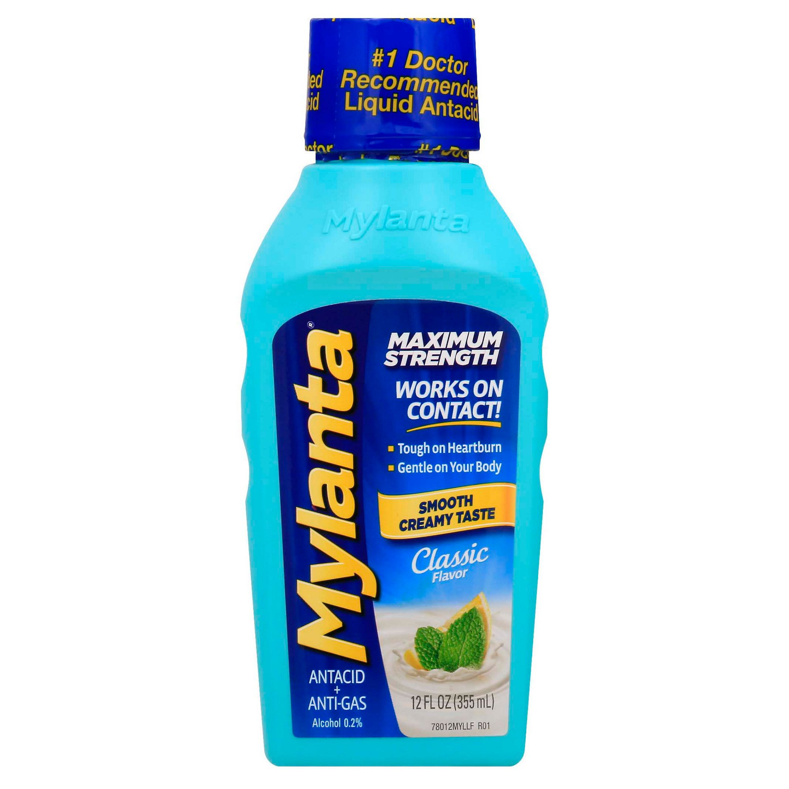
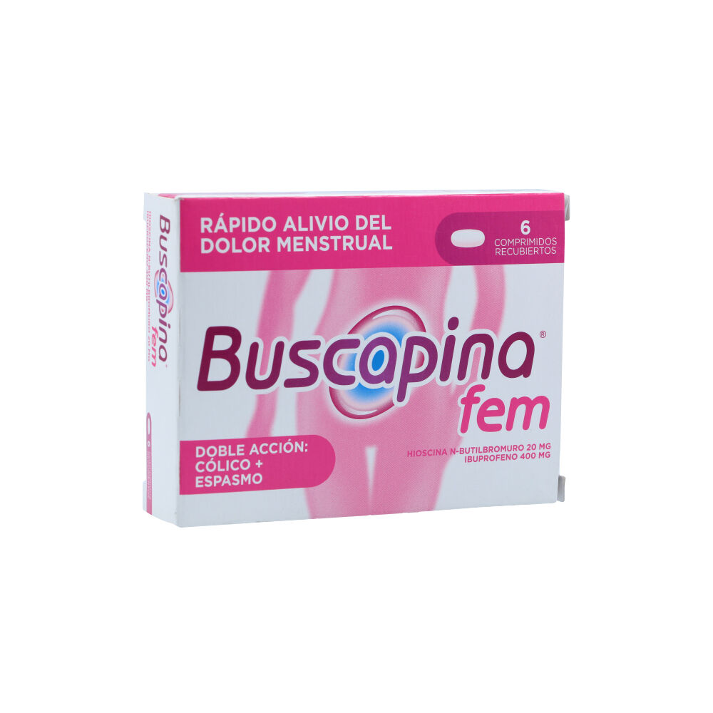

Dolex
Dolex
Para aliviar el dolor ligero o moderado de dolores de cabeza, dolores musculares, períodos menstruales, resfriados
y gargantas irritadas, dolores de muelas, dolores de espalda y para reducir la fiebre.

Nimesulida
Es un antiinflamatorio y analgésico indicado para aliviar varios
tipos de dolor,inflamación y
fiebre,dolor de cabeza,dolores menstrual,producida por infecciones agudas
de las vías respiratorias superiores.

Agrifen
si no hay complicaciones la duración de los síntomas gripales es entre 5
y 10 días.Otros síntomas puede
durar más días
como la tos seca (7 a 10 días) y el cansancio pueden hasta 2 semanas.

Listerine
Se comercializa en todo el mundo. Su fórmula se especializa en combatir los gérmenes
que causan el mal aliento como
las bacterias y el sarro. Su lema es "Mata los gérmenes que causan el mal aliento".

Azitromicina
es un antibiótico de amplio
espectro del grupo de las macrólidos que actúa contra varias bacterias grampositivas y gramnegativas. T

Aspirina
Se utiliza como medicamento para tratar el dolor, la fiebre y la
inflamación, debido a su efecto inhibitorio,de la ciclooxigenasa.

Noraver gripa
Alivio de los síntomas del resfriado común. Adultos y niños mayores de 12 años:
Tomar una cápsula de Noraver Gripa cada 8 horas.

Cefalexina
Es utilizado para tratar infecciones
bacterianas en el tracto respiratorio,los huesos, el oído.
para pacientes con hipersensibilidad.

Meloxican
se usa para el tratamiento del dolor o inflamación causados por la osteoartritis
o la artritis reumatoide. uso en adultos y niños de al menos 2 años de edad.
Vick Vaporub
puede ser utilizado para ser inhalado. Para esto, se deben colocar
2 cucharaditas del producto en una taza grande con 1/2 litro de agua caliente.

Mylanta
Para el rápido alivio de acidez y gases, cuente con Mylanta,
la marca de antiácido líquido,
Ya sea que busque alivio potente de la acidez.

Buscafina FEM
indicado para el alivio sintomático del dolor leve a
moderado: dolor de cabeza, dolor dental, mialgias, dolores menstruales, fiebre, neuritis.
 Iniciar Sesión
Iniciar Sesión Registrarse
Registrarse